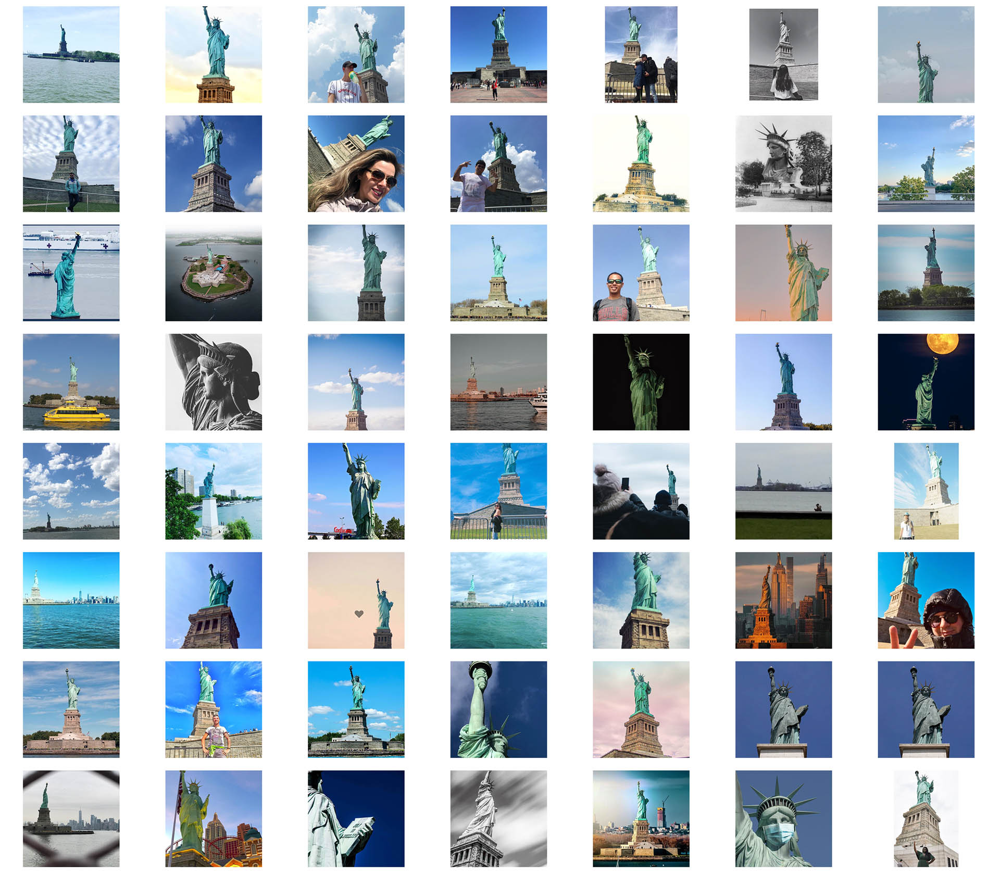

building 3d models with photogrammetry and public instagram photos
project goal
At popular landmarks, people take and share photos that are nearly identical aside from slight shifts in perspective. In this project, I used images from instagram of a common landmark taken from different positions to create a 3D model.
methods
As is a common theme, data is key for this project. I wanted to use images posted on social media since it is is a fully unexpected way that your semi-personal data might be used, and that it represents the collective view of a landmark.
For this proof of concept, I needed to find a landmark that was common enough to appear in public instagram photos, and also a subject that people would capture in a photo. At many landmarks, people take a selfie and either tag the location or add a hashtag, but this image is not useful for reconstructing the geometry of the landmark. I settled on the Statue of Liberty, as it's geometry is more self-contained than other landmarks, and because it seems that people more frequently capture the statue in photos tagged at that location. I manually scraped 56 public images from instagram that clearly showed the statue.

Instagram images used to reconstruct a 3D model.
To process the images, I used a technique called photogrammetry. Here, feature points are identied in each image. These features are then compared against the features in other images. If they match, then the photos and subject can be referenced relative to one another. This process simultaneously solves for the position where the photo was taken, and also the 3D geometry of the shared subject. For this project, I used a program called Metashape for the photogrammetry processing.
In this video, we can see the alignment of the source images, as well as the 3D model in the background.
results
While the output is far from a pixel perfect 3D model, I find it to be a compelling artistic representation of an object seen from the perspective of many different people.
On an iPhone in the Safari browser, click on the image to view the model in AR.
I also tested this method with the Giants stadium, though the processing is not yet complete.
In progress photogrammetry model of the Giants baseball stadium using instagram photos.
conclusion
I had anticipated that this project would take more of a form of crunching through huge numbers of photos in order to create a precise 3D model from public data. Instead, I found that the process was more artistic and subjective. The photos needed to be more highly curated, and the outputs were not precisely correct. However, I found the notion of building and combining a shared 3D model from a number of different spatial and temporal perspectives to be compelling. I think a more refined version of these models could be very artistically interesting.
what will i do next
Manually align key points in images to help with registration and quality of the model.
Make the texture blending sample from more images representively rather than just from the "best" image data.